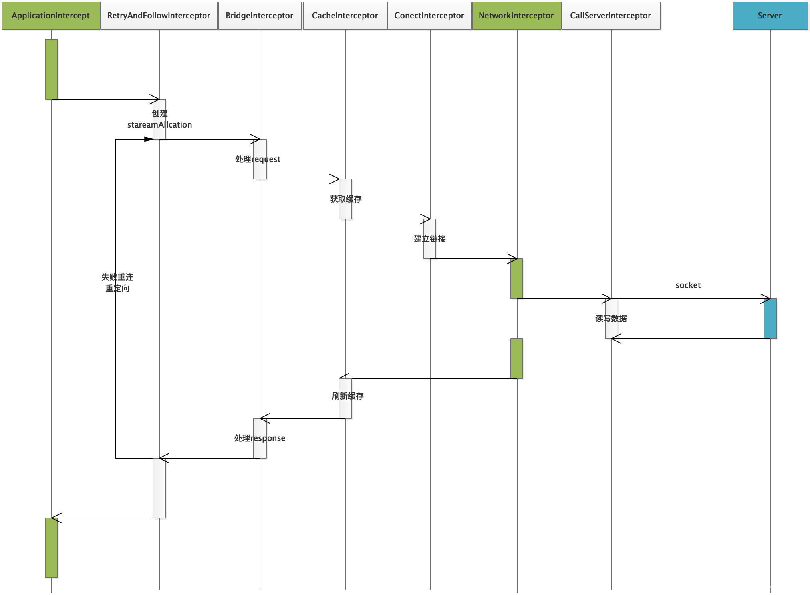
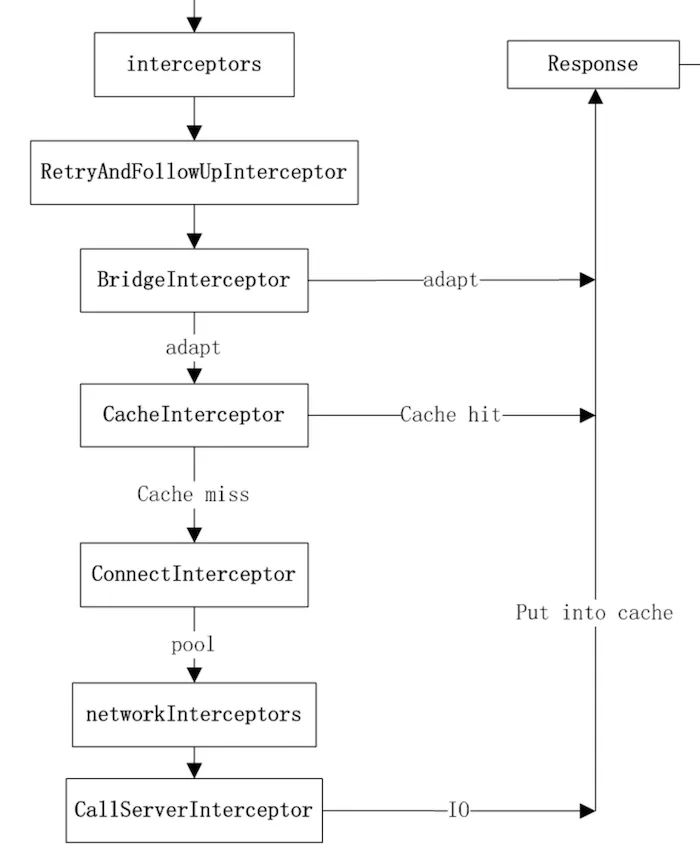
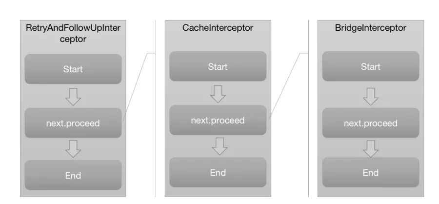
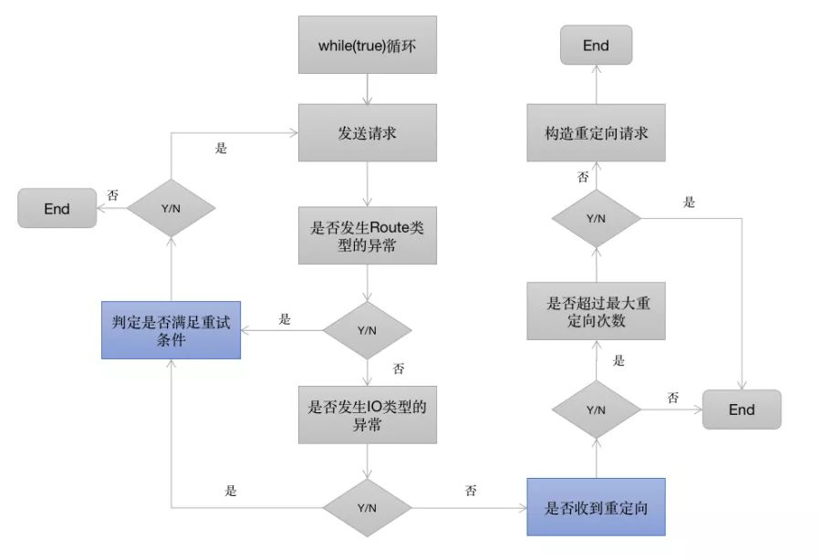
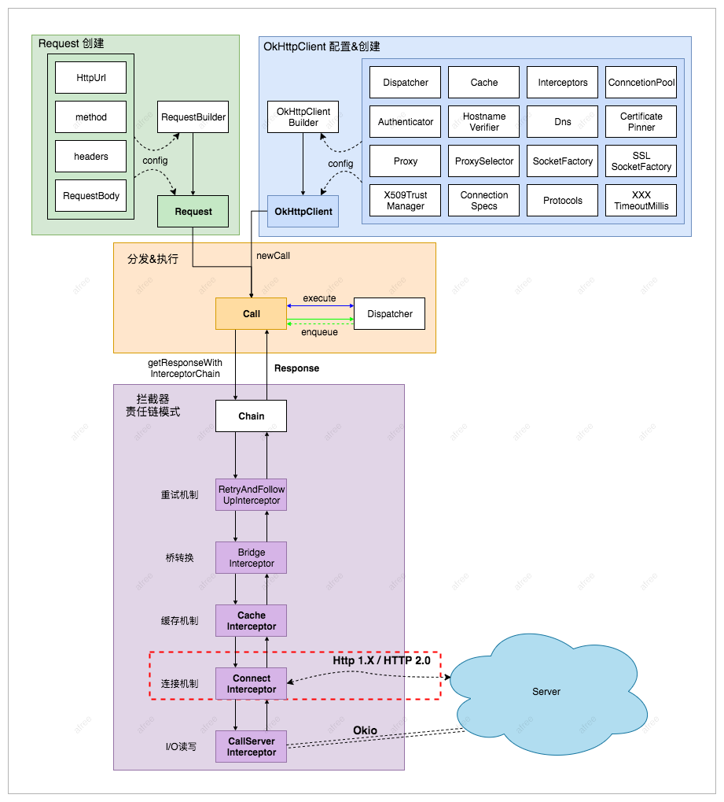
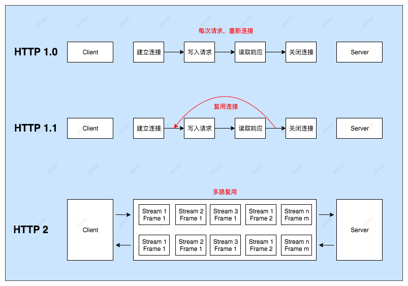

OkHttp网络库代码阅读笔记 02

OkHttp网络库代码阅读笔记 02
之前介绍了OkHttp的使用和同步、异步流程。本章将深入理解Interceptor-拦截器，因为OkHttp的很大一部分逻辑都在拦截器。



@Throws(IOException::class)
internal fun getResponseWithInterceptorChain(): Response {
// Build a full stack of interceptors.
val interceptors = mutableListOf<Interceptor>()
interceptors += client.interceptors
interceptors += RetryAndFollowUpInterceptor(client)
interceptors += BridgeInterceptor(client.cookieJar)
interceptors += CacheInterceptor(client.cache)
interceptors += ConnectInterceptor
if (!forWebSocket) {
interceptors += client.networkInterceptors
}
interceptors += CallServerInterceptor(forWebSocket)
val chain = RealInterceptorChain(
call = this,
interceptors = interceptors,
index = 0,
exchange = null,
request = originalRequest,
connectTimeoutMillis = client.connectTimeoutMillis,
readTimeoutMillis = client.readTimeoutMillis,
writeTimeoutMillis = client.writeTimeoutMillis
)
var calledNoMoreExchanges = false
try {
val response = chain.proceed(originalRequest)
if (isCanceled()) {
response.closeQuietly()
throw IOException("Canceled")
}
return response
} catch (e: IOException) {
calledNoMoreExchanges = true
throw noMoreExchanges(e) as Throwable
} finally {
if (!calledNoMoreExchanges) {
noMoreExchanges(null)
}
}
}
OkHttp主要涉及了以下几个默认拦截器
- client.interceptors();//用户自定义拦截器
- RetryAndFollowUpInterceptor(client)//失败重试拦截器
- BridgeInterceptor(client.cookieJar())//请求转化拦截器
- CacheInterceptor(client.internalCache())//缓存拦截器
- ConnectInterceptor(client)//网络连接拦截器
- CallServerInterceptor(forWebSocket)//数据流拦截器
RetryAndFollowUpInterceptor(client) 连接失败重试拦截器

class RetryAndFollowUpInterceptor(private val client: OkHttpClient) : Interceptor {
override fun intercept(chain: Interceptor.Chain): Response {
val realChain = chain as RealInterceptorChain
var request = chain.request
val call = realChain.call
var followUpCount = 0
var priorResponse: Response? = null
var newExchangeFinder = true
var recoveredFailures = listOf<IOException>()
while (true) {
call.enterNetworkInterceptorExchange(request, newExchangeFinder)
var response: Response
var closeActiveExchange = true
try {
if (call.isCanceled()) {
throw IOException("Canceled")
}
try {
response = realChain.proceed(request)
newExchangeFinder = true
} catch (e: RouteException) {
// The attempt to connect via a route failed. The request will not have been sent.
if (!recover(e.lastConnectException, call, request, requestSendStarted = false)) {
throw e.firstConnectException.withSuppressed(recoveredFailures)
} else {
recoveredFailures += e.firstConnectException
}
newExchangeFinder = false
continue
} catch (e: IOException) {
// An attempt to communicate with a server failed. The request may have been sent.
if (!recover(e, call, request, requestSendStarted = e !is ConnectionShutdownException)) {
throw e.withSuppressed(recoveredFailures)
} else {
recoveredFailures += e
}
newExchangeFinder = false
continue
}
// Attach the prior response if it exists. Such responses never have a body.
if (priorResponse != null) {
//获得新的response
response = response.newBuilder()
.priorResponse(priorResponse.newBuilder()
.body(null)
.build())
.build()
}
val exchange = call.interceptorScopedExchange
// 调用followUpRequest()查看响应是否需要重定向，不需要就返回当前请求，如果需要返回新的请求
val followUp = followUpRequest(response, exchange)
if (followUp == null) {
if (exchange != null && exchange.isDuplex) {
call.timeoutEarlyExit()
}
closeActiveExchange = false
return response
}
val followUpBody = followUp.body
if (followUpBody != null && followUpBody.isOneShot()) {
closeActiveExchange = false
return response
}
response.body?.closeQuietly()
//如果重定向次数超过最大次数抛出异常
if (++followUpCount > MAX_FOLLOW_UPS) {
throw ProtocolException("Too many follow-up requests: $followUpCount")
}
request = followUp
priorResponse = response
} finally {
call.exitNetworkInterceptorExchange(closeActiveExchange)
}
}
}
/**
* Report and attempt to recover from a failure to communicate with a server. Returns true if
* `e` is recoverable, or false if the failure is permanent. Requests with a body can only
* be recovered if the body is buffered or if the failure occurred before the request has been
* sent.
*/
//报告并尝试从与服务器通信失败中恢复。如果可恢复，则返回true；
//如果失败是永久性的，则返回false。只有在缓冲了正文或在发送请求之前发生故障时，才可以恢复具有正文的请求。
private fun recover(
e: IOException,
call: RealCall,
userRequest: Request,
requestSendStarted: Boolean
): Boolean {
// The application layer has forbidden retries.
// 用户设置的禁止重试
if (!client.retryOnConnectionFailure) return false
// We can't send the request body again.
// 不能再发送请求体
if (requestSendStarted && requestIsOneShot(e, userRequest)) return false
// This exception is fatal.
// 致命的异常
if (!isRecoverable(e, requestSendStarted)) return false
// No more routes to attempt.
// 没有更多的路线可以尝试。
if (!call.retryAfterFailure()) return false
// For failure recovery, use the same route selector with a new connection.
// 对于故障恢复，请对新连接使用同一路由选择器
return true
}
/**
* Figures out the HTTP request to make in response to receiving [userResponse]. This will
* either add authentication headers, follow redirects or handle a client request timeout. If a
* follow-up is either unnecessary or not applicable, this returns null.
*/
/**
* 查看响应是否需要重定向，不需要就返回当前请求，如果需要返回新的请求。
* 找出接收时要发出的HTTP请求。这将添加身份验证头、遵循重定向或处理客户端请求超时。
* 如果后续操作不必要或不适用，则返回null。
*/
@Throws(IOException::class)
private fun followUpRequest(userResponse: Response, exchange: Exchange?): Request? {
val route = exchange?.connection?.route()
//获取响应码
val responseCode = userResponse.code
//请求方法
val method = userResponse.request.method
//响应码分类处理
when (responseCode) {
//407 代理需要身份认证
HTTP_PROXY_AUTH -> {
val selectedProxy = route!!.proxy
if (selectedProxy.type() != Proxy.Type.HTTP) {
throw ProtocolException("Received HTTP_PROXY_AUTH (407) code while not using proxy")
}
return client.proxyAuthenticator.authenticate(route, userResponse)
}
//401 需要身份认证
HTTP_UNAUTHORIZED -> return client.authenticator.authenticate(route, userResponse)
// 300多种选择。请求的资源可包括多个位置，相应可返回一个资源特征与地址的列表用于用户终端（例如：浏览器）选择
// 301永久移动。请求的资源已被永久的移动到新URI，返回信息会包括新的URI，浏览器会自动定向到新URI。
// 302临时移动。与301类似。但资源只是临时被移动。
// 303查看其它地址。与301类似。使用GET和POST请求查看
HTTP_PERM_REDIRECT, HTTP_TEMP_REDIRECT, HTTP_MULT_CHOICE, HTTP_MOVED_PERM, HTTP_MOVED_TEMP, HTTP_SEE_OTHER -> {
return buildRedirectRequest(userResponse, method)
}
//408 超时
HTTP_CLIENT_TIMEOUT -> {
// 408's are rare in practice, but some servers like HAProxy use this response code. The
// spec says that we may repeat the request without modifications. Modern browsers also
// repeat the request (even non-idempotent ones.)
if (!client.retryOnConnectionFailure) {
// The application layer has directed us not to retry the request.
// 应用层指示我们不要重试请求
return null
}
val requestBody = userResponse.request.body
if (requestBody != null && requestBody.isOneShot()) {
return null
}
val priorResponse = userResponse.priorResponse
if (priorResponse != null && priorResponse.code == HTTP_CLIENT_TIMEOUT) {
// We attempted to retry and got another timeout. Give up.
return null
}
if (retryAfter(userResponse, 0) > 0) {
return null
}
return userResponse.request
}
// 503 由于超载或系统维护，服务器暂时的无法处理客户端的请求。延时的长度可包含在服务器的Retry-After头信息中
HTTP_UNAVAILABLE -> {
val priorResponse = userResponse.priorResponse
if (priorResponse != null && priorResponse.code == HTTP_UNAVAILABLE) {
// We attempted to retry and got another timeout. Give up.
return null
}
if (retryAfter(userResponse, Integer.MAX_VALUE) == 0) {
// specifically received an instruction to retry without delay
return userResponse.request
}
return null
}
HTTP_MISDIRECTED_REQUEST -> {
// OkHttp can coalesce HTTP/2 connections even if the domain names are different. See
// RealConnection.isEligible(). If we attempted this and the server returned HTTP 421, then
// we can retry on a different connection.
val requestBody = userResponse.request.body
if (requestBody != null && requestBody.isOneShot()) {
return null
}
if (exchange == null || !exchange.isCoalescedConnection) {
return null
}
exchange.connection.noCoalescedConnections()
return userResponse.request
}
else -> return null
}
}
private fun buildRedirectRequest(userResponse: Response, method: String): Request? {
// Does the client allow redirects?
if (!client.followRedirects) return null
val location = userResponse.header("Location") ?: return null
// Don't follow redirects to unsupported protocols.
val url = userResponse.request.url.resolve(location) ?: return null
// If configured, don't follow redirects between SSL and non-SSL.
//如果已配置，请不要遵循SSL和非SSL之间的重定向。
val sameScheme = url.scheme == userResponse.request.url.scheme
if (!sameScheme && !client.followSslRedirects) return null
// Most redirects don't include a request body.
val requestBuilder = userResponse.request.newBuilder()
if (HttpMethod.permitsRequestBody(method)) {
val responseCode = userResponse.code
val maintainBody = HttpMethod.redirectsWithBody(method) ||
responseCode == HTTP_PERM_REDIRECT ||
responseCode == HTTP_TEMP_REDIRECT
if (HttpMethod.redirectsToGet(method) && responseCode != HTTP_PERM_REDIRECT && responseCode != HTTP_TEMP_REDIRECT) {
requestBuilder.method("GET", null)
} else {
val requestBody = if (maintainBody) userResponse.request.body else null
requestBuilder.method(method, requestBody)
}
if (!maintainBody) {
requestBuilder.removeHeader("Transfer-Encoding")
requestBuilder.removeHeader("Content-Length")
requestBuilder.removeHeader("Content-Type")
}
}
// When redirecting across hosts, drop all authentication headers. This
// is potentially annoying to the application layer since they have no
// way to retain them.
// 跨主机重定向时，删除所有身份验证头。这对应用程序层来说可能很烦人，因为它们无法保留它们。
if (!userResponse.request.url.canReuseConnectionFor(url)) {
requestBuilder.removeHeader("Authorization")
}
return requestBuilder.url(url).build()
}
}
该拦截器的逻辑很多，但其实主要做两件事，一个是重试，一个是重定向，逻辑流程大概是这样的。通过while死循环来获取response，每次循环开始都根据条件获取下一个request，如果没有request，则返回response，退出循环。而获取的request 的条件是根据上一次请求的response 状态码确定的，在循环体中同时创建了一些后续需要的对象
RetryAndFollowUpInterceptor开启了一个while(true)的循环，并在循环内部完成两个重要的判定：
- 当请求内部抛出异常时，判定是否需要重试
- 当响应结果是3xx重定向时，构建新的请求并发送请求
重试的逻辑相对复杂，有如下的判定逻辑（具体代码在RetryAndFollowUpInterceptor类的recover方法）：
- client的retryOnConnectionFailure参数设置为false，不进行重试
- 请求的body已经发出，不进行重试
- 特殊的异常类型不进行重试（如ProtocolException，SSLHandshakeException等）
- 没有更多的route（包含proxy和inetaddress），不进行重试
- 前面这四条规则都不符合的条件下，则会重试当前请求。重定向的逻辑则相对简单，这里就不深入了。
BridageInterceptor 拦截器
/**
* Bridges from application code to network code. First it builds a network request from a user
* request. Then it proceeds to call the network. Finally it builds a user response from the network
* response.
*/
class BridgeInterceptor(private val cookieJar: CookieJar) : Interceptor {
@Throws(IOException::class)
override fun intercept(chain: Interceptor.Chain): Response {
val userRequest = chain.request()
//负责把用户构造的请求转换为发送到服务器的请求 、把服务器返回的响应转换为用户友好的响应，是从应用程序代码到网络代码的桥梁
val requestBuilder = userRequest.newBuilder()
val body = userRequest.body
if (body != null) {
//设置内容长度，内容编码
val contentType = body.contentType()
if (contentType != null) {
requestBuilder.header("Content-Type", contentType.toString())
}
val contentLength = body.contentLength()
if (contentLength != -1L) {
requestBuilder.header("Content-Length", contentLength.toString())
requestBuilder.removeHeader("Transfer-Encoding")
} else {
requestBuilder.header("Transfer-Encoding", "chunked")
requestBuilder.removeHeader("Content-Length")
}
}
if (userRequest.header("Host") == null) {
requestBuilder.header("Host", userRequest.url.toHostHeader())
}
if (userRequest.header("Connection") == null) {
requestBuilder.header("Connection", "Keep-Alive")
}
// If we add an "Accept-Encoding: gzip" header field we're responsible for also decompressing
// the transfer stream.
var transparentGzip = false
if (userRequest.header("Accept-Encoding") == null && userRequest.header("Range") == null) {
transparentGzip = true
requestBuilder.header("Accept-Encoding", "gzip")
}
val cookies = cookieJar.loadForRequest(userRequest.url)
if (cookies.isNotEmpty()) {
requestBuilder.header("Cookie", cookieHeader(cookies))
}
if (userRequest.header("User-Agent") == null) {
requestBuilder.header("User-Agent", userAgent)
}
val networkResponse = chain.proceed(requestBuilder.build())
cookieJar.receiveHeaders(userRequest.url, networkResponse.headers)
val responseBuilder = networkResponse.newBuilder()
.request(userRequest)
//在接收到内容后进行解压。省去了应用层处理数据解压的麻烦
if (transparentGzip &&
"gzip".equals(networkResponse.header("Content-Encoding"), ignoreCase = true) &&
networkResponse.promisesBody()) {
val responseBody = networkResponse.body
if (responseBody != null) {
val gzipSource = GzipSource(responseBody.source())
val strippedHeaders = networkResponse.headers.newBuilder()
.removeAll("Content-Encoding")
.removeAll("Content-Length")
.build()
responseBuilder.headers(strippedHeaders)
val contentType = networkResponse.header("Content-Type")
responseBuilder.body(RealResponseBody(contentType, -1L, gzipSource.buffer()))
}
}
return responseBuilder.build()
}
/** Returns a 'Cookie' HTTP request header with all cookies, like `a=b; c=d`. */
private fun cookieHeader(cookies: List<Cookie>): String = buildString {
cookies.forEachIndexed { index, cookie ->
if (index > 0) append("; ")
append(cookie.name).append('=').append(cookie.value)
}
}
}
BridageInterceptor 拦截器的功能如下：
- 负责把用户构造的请求转换为发送到服务器的请求 、把服务器返回的响应转换为用户友好的响应，是从应用程序代码到网络代码的桥梁
- 设置内容长度，内容编码
- 设置gzip压缩，并在接收到内容后进行解压。省去了应用层处理数据解压的麻烦
- 添加cookie
- 设置其他报头，如User-Agent,Host,Keep-alive等。其中Keep-Alive是实现连接复用的必要步骤
CacheInterceptor 拦截器
/** Serves requests from the cache and writes responses to the cache. */
class CacheInterceptor(internal val cache: Cache?) : Interceptor {
@Throws(IOException::class)
override fun intercept(chain: Interceptor.Chain): Response {
val call = chain.call()
// 读取候选缓存；
val cacheCandidate = cache?.get(chain.request())
val now = System.currentTimeMillis()
// 创建缓存策略（强制缓存，对比缓存等策略)；
val strategy = CacheStrategy.Factory(now, chain.request(), cacheCandidate).compute()
val networkRequest = strategy.networkRequest
val cacheResponse = strategy.cacheResponse
cache?.trackResponse(strategy)
val listener = (call as? RealCall)?.eventListener ?: EventListener.NONE
if (cacheCandidate != null && cacheResponse == null) {
// The cache candidate wasn't applicable. Close it.
cacheCandidate.body?.closeQuietly()
}
// If we're forbidden from using the network and the cache is insufficient, fail.
// 根据策略，不使用网络，缓存又没有直接报错；
if (networkRequest == null && cacheResponse == null) {
return Response.Builder()
.request(chain.request())
.protocol(Protocol.HTTP_1_1)
.code(HTTP_GATEWAY_TIMEOUT)
.message("Unsatisfiable Request (only-if-cached)")
.body(EMPTY_RESPONSE)
.sentRequestAtMillis(-1L)
.receivedResponseAtMillis(System.currentTimeMillis())
.build().also {
listener.satisfactionFailure(call, it)
}
}
// If we don't need the network, we're done.
// 根据策略，不使用网络，有缓存就直接返回；
if (networkRequest == null) {
return cacheResponse!!.newBuilder()
.cacheResponse(stripBody(cacheResponse))
.build().also {
listener.cacheHit(call, it)
}
}
if (cacheResponse != null) {
listener.cacheConditionalHit(call, cacheResponse)
} else if (cache != null) {
listener.cacheMiss(call)
}
var networkResponse: Response? = null
try {
networkResponse = chain.proceed(networkRequest)
} finally {
// If we're crashing on I/O or otherwise, don't leak the cache body.
if (networkResponse == null && cacheCandidate != null) {
cacheCandidate.body?.closeQuietly()
}
}
// If we have a cache response too, then we're doing a conditional get.
// 接收到的网络结果，如果是code 304, 使用缓存，返回缓存结果（对比缓存）
if (cacheResponse != null) {
if (networkResponse?.code == HTTP_NOT_MODIFIED) {
val response = cacheResponse.newBuilder()
.headers(combine(cacheResponse.headers, networkResponse.headers))
.sentRequestAtMillis(networkResponse.sentRequestAtMillis)
.receivedResponseAtMillis(networkResponse.receivedResponseAtMillis)
.cacheResponse(stripBody(cacheResponse))
.networkResponse(stripBody(networkResponse))
.build()
networkResponse.body!!.close()
// Update the cache after combining headers but before stripping the
// Content-Encoding header (as performed by initContentStream()).
cache!!.trackConditionalCacheHit()
cache.update(cacheResponse, response)
return response.also {
listener.cacheHit(call, it)
}
} else {
cacheResponse.body?.closeQuietly()
}
}
// 读取网络结果；
val response = networkResponse!!.newBuilder()
.cacheResponse(stripBody(cacheResponse))
.networkResponse(stripBody(networkResponse))
.build()
if (cache != null) {
if (response.promisesBody() && CacheStrategy.isCacheable(response, networkRequest)) {
// Offer this request to the cache.
val cacheRequest = cache.put(response)
// 对数据进行缓存；
return cacheWritingResponse(cacheRequest, response).also {
if (cacheResponse != null) {
// This will log a conditional cache miss only.
listener.cacheMiss(call)
}
}
}
if (HttpMethod.invalidatesCache(networkRequest.method)) {
try {
cache.remove(networkRequest)
} catch (_: IOException) {
// The cache cannot be written.
}
}
}
// 返回网络读取的结果。
return response
}
/**
* Returns a new source that writes bytes to [cacheRequest] as they are read by the source
* consumer. This is careful to discard bytes left over when the stream is closed; otherwise we
* may never exhaust the source stream and therefore not complete the cached response.
*/
@Throws(IOException::class)
private fun cacheWritingResponse(cacheRequest: CacheRequest?, response: Response): Response {
// Some apps return a null body; for compatibility we treat that like a null cache request.
if (cacheRequest == null) return response
val cacheBodyUnbuffered = cacheRequest.body()
val source = response.body!!.source()
val cacheBody = cacheBodyUnbuffered.buffer()
val cacheWritingSource = object : Source {
private var cacheRequestClosed = false
@Throws(IOException::class)
override fun read(sink: Buffer, byteCount: Long): Long {
val bytesRead: Long
try {
bytesRead = source.read(sink, byteCount)
} catch (e: IOException) {
if (!cacheRequestClosed) {
cacheRequestClosed = true
cacheRequest.abort() // Failed to write a complete cache response.
}
throw e
}
if (bytesRead == -1L) {
if (!cacheRequestClosed) {
cacheRequestClosed = true
cacheBody.close() // The cache response is complete!
}
return -1
}
sink.copyTo(cacheBody.buffer, sink.size - bytesRead, bytesRead)
cacheBody.emitCompleteSegments()
return bytesRead
}
override fun timeout() = source.timeout()
@Throws(IOException::class)
override fun close() {
if (!cacheRequestClosed &&
!discard(ExchangeCodec.DISCARD_STREAM_TIMEOUT_MILLIS, MILLISECONDS)) {
cacheRequestClosed = true
cacheRequest.abort()
}
source.close()
}
}
val contentType = response.header("Content-Type")
val contentLength = response.body.contentLength()
return response.newBuilder()
.body(RealResponseBody(contentType, contentLength, cacheWritingSource.buffer()))
.build()
}
companion object {
private fun stripBody(response: Response?): Response? {
return if (response?.body != null) {
response.newBuilder().body(null).build()
} else {
response
}
}
/** Combines cached headers with a network headers as defined by RFC 7234, 4.3.4. */
private fun combine(cachedHeaders: Headers, networkHeaders: Headers): Headers {
val result = Headers.Builder()
for (index in 0 until cachedHeaders.size) {
val fieldName = cachedHeaders.name(index)
val value = cachedHeaders.value(index)
if ("Warning".equals(fieldName, ignoreCase = true) && value.startsWith("1")) {
// Drop 100-level freshness warnings.
continue
}
if (isContentSpecificHeader(fieldName) ||
!isEndToEnd(fieldName) ||
networkHeaders[fieldName] == null) {
result.addLenient(fieldName, value)
}
}
for (index in 0 until networkHeaders.size) {
val fieldName = networkHeaders.name(index)
if (!isContentSpecificHeader(fieldName) && isEndToEnd(fieldName)) {
result.addLenient(fieldName, networkHeaders.value(index))
}
}
return result.build()
}
/**
* Returns true if [fieldName] is an end-to-end HTTP header, as defined by RFC 2616,
* 13.5.1.
*/
private fun isEndToEnd(fieldName: String): Boolean {
return !"Connection".equals(fieldName, ignoreCase = true) &&
!"Keep-Alive".equals(fieldName, ignoreCase = true) &&
!"Proxy-Authenticate".equals(fieldName, ignoreCase = true) &&
!"Proxy-Authorization".equals(fieldName, ignoreCase = true) &&
!"TE".equals(fieldName, ignoreCase = true) &&
!"Trailers".equals(fieldName, ignoreCase = true) &&
!"Transfer-Encoding".equals(fieldName, ignoreCase = true) &&
!"Upgrade".equals(fieldName, ignoreCase = true)
}
/**
* Returns true if [fieldName] is content specific and therefore should always be used
* from cached headers.
*/
private fun isContentSpecificHeader(fieldName: String): Boolean {
return "Content-Length".equals(fieldName, ignoreCase = true) ||
"Content-Encoding".equals(fieldName, ignoreCase = true) ||
"Content-Type".equals(fieldName, ignoreCase = true)
}
}
}
CacheInterceptor 拦截器的逻辑流程如下：
通过Request尝试到Cache中拿缓存，当然前提是OkHttpClient中配置了缓存，默认是不支持的。 根据response,time,request创建一个缓存策略，用于判断怎样使用缓存。 如果缓存策略中设置禁止使用网络，并且缓存又为空，则构建一个Response直接返回，注意返回码=504 缓存策略中设置不使用网络，但是又缓存，直接返回缓存 接着走后续过滤器的流程，chain.proceed(networkRequest) 当缓存存在的时候，如果网络返回的Resposne为304，则使用缓存的Resposne。 构建网络请求的Resposne 当在OkHttpClient中配置了缓存，则将这个Resposne缓存起来。 缓存起来的步骤也是先缓存header，再缓存body。 返回Resposne
ConnectInterceptor 拦截器
这个类本身很简单。OkHttp 与服务端建立连接操作。在底层是通过SOCKET的方式于服务端进行连接的，并且在连接建立之后会通过 OKIO 获取通向server端的输入流和输出流。这个过程就在 ConnectInterceptor 拦截器中完成的，下面就来关注这个拦截器的具体实现。

object ConnectInterceptor : Interceptor {
@Throws(IOException::class)
override fun intercept(chain: Interceptor.Chain): Response {
val realChain = chain as RealInterceptorChain
val exchange = realChain.call.initExchange(chain)
val connectedChain = realChain.copy(exchange = exchange)
return connectedChain.proceed(realChain.request)
}
}
我们先看initExchange()中做了什么。它的作用就是与服务端建立连接，并且获得通向服务端的输入和输出流对象。
/** Finds a new or pooled connection to carry a forthcoming request and response. */
internal fun initExchange(chain: RealInterceptorChain): Exchange {
synchronized(this) {
check(expectMoreExchanges) { "released" }
check(!responseBodyOpen)
check(!requestBodyOpen)
}
// exchangeFinder请求连接获取，请求编解码实例构建。
val exchangeFinder = this.exchangeFinder!!
val codec = exchangeFinder.find(client, chain)
// 创建Exchange，它主要负责HTTP连接的维护管理及通知ExchangeCodec编码器进行实际的I/O操作
val result = Exchange(this, eventListener, exchangeFinder, codec)
this.interceptorScopedExchange = result
this.exchange = result
synchronized(this) {
this.requestBodyOpen = true
this.responseBodyOpen = true
}
if (canceled) throw IOException("Canceled")
return result
}
这里先获取到exchangeFinder，然后通过exchangeFinder.find(client, chain)建立连接初始方法，获取连接后，会创建一个ExchangeCodec用于I/O工作
ExchangeFinder.find
- 获取连接 RealConnection
- 构造连接的编码器，ExchangeCodec
class ExchangeFinder(
private val connectionPool: RealConnectionPool,
internal val address: Address,
private val call: RealCall,
private val eventListener: EventListener
) {
private var routeSelection: RouteSelector.Selection? = null
private var routeSelector: RouteSelector? = null
private var refusedStreamCount = 0
private var connectionShutdownCount = 0
private var otherFailureCount = 0
private var nextRouteToTry: Route? = null
fun find(
client: OkHttpClient,
chain: RealInterceptorChain
): ExchangeCodec {
try {
// 获取有效连接
val resultConnection = findHealthyConnection(
connectTimeout = chain.connectTimeoutMillis,
readTimeout = chain.readTimeoutMillis,
writeTimeout = chain.writeTimeoutMillis,
pingIntervalMillis = client.pingIntervalMillis,
connectionRetryEnabled = client.retryOnConnectionFailure,
doExtensiveHealthChecks = chain.request.method != "GET"
)
// 创建编码器
return resultConnection.newCodec(client, chain)
} catch (e: RouteException) {
trackFailure(e.lastConnectException)
throw e
} catch (e: IOException) {
trackFailure(e)
throw RouteException(e)
}
}
/**
* Finds a connection and returns it if it is healthy. If it is unhealthy the process is repeated
* until a healthy connection is found.
*/
@Throws(IOException::class)
private fun findHealthyConnection(
connectTimeout: Int,
readTimeout: Int,
writeTimeout: Int,
pingIntervalMillis: Int,
connectionRetryEnabled: Boolean,
doExtensiveHealthChecks: Boolean
): RealConnection {
while (true) {
// 执行连接获取方法
val candidate = findConnection(
connectTimeout = connectTimeout,
readTimeout = readTimeout,
writeTimeout = writeTimeout,
pingIntervalMillis = pingIntervalMillis,
connectionRetryEnabled = connectionRetryEnabled
)
// Confirm that the connection is good.
// 判断该连接是否可用
if (candidate.isHealthy(doExtensiveHealthChecks)) {
return candidate
}
// If it isn't, take it out of the pool.
candidate.noNewExchanges()
// Make sure we have some routes left to try. One example where we may exhaust all the routes
// would happen if we made a new connection and it immediately is detected as unhealthy.
if (nextRouteToTry != null) continue
val routesLeft = routeSelection?.hasNext() ?: true
if (routesLeft) continue
val routesSelectionLeft = routeSelector?.hasNext() ?: true
if (routesSelectionLeft) continue
throw IOException("exhausted all routes")
}
}
/**
* Returns a connection to host a new stream. This prefers the existing connection if it exists,
* then the pool, finally building a new connection.
*
* This checks for cancellation before each blocking operation.
*/
// findConnection 真正去获取一个连接并且通过 SOCKET 建立连接的方法。
@Throws(IOException::class)
private fun findConnection(
connectTimeout: Int,
readTimeout: Int,
writeTimeout: Int,
pingIntervalMillis: Int,
connectionRetryEnabled: Boolean
): RealConnection {
if (call.isCanceled()) throw IOException("Canceled")
// Attempt to reuse the connection from the call.
val callConnection = call.connection // This may be mutated by releaseConnectionNoEvents()!
if (callConnection != null) {
var toClose: Socket? = null
synchronized(callConnection) {
if (callConnection.noNewExchanges || !sameHostAndPort(callConnection.route().address.url)) {
toClose = call.releaseConnectionNoEvents()
}
}
// If the call's connection wasn't released, reuse it. We don't call connectionAcquired() here
// because we already acquired it.
// 如果当前connection不为空可以直接使用
if (call.connection != null) {
check(toClose == null)
return callConnection
}
// The call's connection was released.
toClose?.closeQuietly()
eventListener.connectionReleased(call, callConnection)
}
// We need a new connection. Give it fresh stats.
refusedStreamCount = 0
connectionShutdownCount = 0
otherFailureCount = 0
// Attempt to get a connection from the pool.
// 当前这个connection不能使用，尝试从连接池里面获取一个请求
if (connectionPool.callAcquirePooledConnection(address, call, null, false)) {
//如果找到复用的，则使用这条连接，回调
val result = call.connection!!
eventListener.connectionAcquired(call, result)
//找到一条可复用的连接
return result
}
// Nothing in the pool. Figure out what route we'll try next.
//当在连接池中没有找到可用的连接时，创建一个新的连接。
val routes: List<Route>?
val route: Route
if (nextRouteToTry != null) {
// Use a route from a preceding coalesced connection.
routes = null
route = nextRouteToTry!!
nextRouteToTry = null
} else if (routeSelection != null && routeSelection!!.hasNext()) {
// Use a route from an existing route selection.
routes = null
route = routeSelection!!.next()
} else {
// Compute a new route selection. This is a blocking operation!
var localRouteSelector = routeSelector
if (localRouteSelector == null) {
localRouteSelector = RouteSelector(address, call.client.routeDatabase, call, eventListener)
this.routeSelector = localRouteSelector
}
val localRouteSelection = localRouteSelector.next()
routeSelection = localRouteSelection
routes = localRouteSelection.routes
if (call.isCanceled()) throw IOException("Canceled")
// Now that we have a set of IP addresses, make another attempt at getting a connection from
// the pool. We have a better chance of matching thanks to connection coalescing.
if (connectionPool.callAcquirePooledConnection(address, call, routes, false)) {
val result = call.connection!!
eventListener.connectionAcquired(call, result)
return result
}
route = localRouteSelection.next()
}
// Connect. Tell the call about the connecting call so async cancels work.
val newConnection = RealConnection(connectionPool, route)
call.connectionToCancel = newConnection
try {
newConnection.connect(
connectTimeout,
readTimeout,
writeTimeout,
pingIntervalMillis,
connectionRetryEnabled,
call,
eventListener
)
} finally {
call.connectionToCancel = null
}
call.client.routeDatabase.connected(newConnection.route())
// If we raced another call connecting to this host, coalesce the connections. This makes for 3
// different lookups in the connection pool!
if (connectionPool.callAcquirePooledConnection(address, call, routes, true)) {
val result = call.connection!!
nextRouteToTry = route
newConnection.socket().closeQuietly()
eventListener.connectionAcquired(call, result)
return result
}
synchronized(newConnection) {
connectionPool.put(newConnection)
call.acquireConnectionNoEvents(newConnection)
}
eventListener.connectionAcquired(call, newConnection)
return newConnection
}
}
上面这段代码中，ExchangeFinder.findHealthyConnection执行获取连接方法，获取连接；如果连接是新创建的连接，则直接返回结果；如果连接是复用连接池的连接，则继续判断该连接是否可用，可用则返回，不可用则继续find。 在findHealthyConnection中通过调用findConnection执行连接获取方法。 ExchangeFinder.findConnection获取连接过程如下：
- 第一次，先从连接池获取连接
- 第二次，选择新的路由，再次尝试从连接池获取
- 构造一个新的连接
- 第三次，在高并发情况下，尝试走HTTP2的多路复用连接
- 如果连接池没有获取到连接，则走构造的那个新的连接，新的连接会加入到连接池
找到健康的连接，执行resultConnection.newCodec(client, chain)方法，返回HttpCodec实例。
@Throws(SocketException::class)
internal fun newCodec(client: OkHttpClient, chain: RealInterceptorChain): ExchangeCodec {
val socket = this.socket!!
val source = this.source!!
val sink = this.sink!!
val http2Connection = this.http2Connection
return if (http2Connection != null) {
Http2ExchangeCodec(client, this, chain, http2Connection)
} else {
socket.soTimeout = chain.readTimeoutMillis()
source.timeout().timeout(chain.readTimeoutMillis.toLong(), MILLISECONDS)
sink.timeout().timeout(chain.writeTimeoutMillis.toLong(), MILLISECONDS)
Http1ExchangeCodec(client, this, source, sink)
}
}
这里其实就是判断是Http还是Http2，然后根据策略模式最后返回。

在ConnectInterceptor内部已经完成了socket连接。socket连接的获取和建立都是在findHealthConnection()方法里完成的。
CallServerInterceptor(forWebSocket) 数据流拦截器
CalllServerInterceptor是最后一个拦截器了。在 ConnectInterceptor 拦截器的功能就是负责与服务器建立 Socket 连接，并且创建了一个 HttpStream 它包括通向服务器的输入流和输出流。而接下来的 CallServerInterceptor 拦截器在exchange.writeRequestHeaders(request)使用 Http1ExchangeCodec 和Http2ExchangeCodec（两个都继承了ExchangeCodec）与服务器进行数据的读写操作的。
/** This is the last interceptor in the chain. It makes a network call to the server. */
class CallServerInterceptor(private val forWebSocket: Boolean) : Interceptor {
@Throws(IOException::class)
override fun intercept(chain: Interceptor.Chain): Response {
val realChain = chain as RealInterceptorChain
val exchange = realChain.exchange!!
val request = realChain.request
val requestBody = request.body
val sentRequestMillis = System.currentTimeMillis()
//写入请求头信息
exchange.writeRequestHeaders(request)
var invokeStartEvent = true
var responseBuilder: Response.Builder? = null
//写入请求体信息（有请求体的情况）
if (HttpMethod.permitsRequestBody(request.method) && requestBody != null) {
// If there's a "Expect: 100-continue" header on the request, wait for a "HTTP/1.1 100
// Continue" response before transmitting the request body. If we don't get that, return
// what we did get (such as a 4xx response) without ever transmitting the request body.
if ("100-continue".equals(request.header("Expect"), ignoreCase = true)) {
exchange.flushRequest()
responseBuilder = exchange.readResponseHeaders(expectContinue = true)
exchange.responseHeadersStart()
invokeStartEvent = false
}
if (responseBuilder == null) {
if (requestBody.isDuplex()) {
// Prepare a duplex body so that the application can send a request body later.
exchange.flushRequest()
val bufferedRequestBody = exchange.createRequestBody(request, true).buffer()
requestBody.writeTo(bufferedRequestBody)
} else {
// Write the request body if the "Expect: 100-continue" expectation was met.
val bufferedRequestBody = exchange.createRequestBody(request, false).buffer()
requestBody.writeTo(bufferedRequestBody)
bufferedRequestBody.close()
}
} else {
exchange.noRequestBody()
if (!exchange.connection.isMultiplexed) {
// If the "Expect: 100-continue" expectation wasn't met, prevent the HTTP/1 connection
// from being reused. Otherwise we're still obligated to transmit the request body to
// leave the connection in a consistent state.
exchange.noNewExchangesOnConnection()
}
}
} else {
exchange.noRequestBody()
}
//结束请求
if (requestBody == null || !requestBody.isDuplex()) {
exchange.finishRequest()
}
// 读取响应头，写入到创建的ResponseBuilder
if (responseBuilder == null) {
responseBuilder = exchange.readResponseHeaders(expectContinue = false)!!
if (invokeStartEvent) {
exchange.responseHeadersStart()
invokeStartEvent = false
}
}
var response = responseBuilder
.request(request)
.handshake(exchange.connection.handshake())
.sentRequestAtMillis(sentRequestMillis)
.receivedResponseAtMillis(System.currentTimeMillis())
.build()
var code = response.code
// 响应码为100的情况下，再次读取响应头，重新构建response
if (code == 100) {
// Server sent a 100-continue even though we did not request one. Try again to read the actual
// response status.
responseBuilder = exchange.readResponseHeaders(expectContinue = false)!!
if (invokeStartEvent) {
exchange.responseHeadersStart()
}
response = responseBuilder
.request(request)
.handshake(exchange.connection.handshake())
.sentRequestAtMillis(sentRequestMillis)
.receivedResponseAtMillis(System.currentTimeMillis())
.build()
code = response.code
}
exchange.responseHeadersEnd(response)
response = if (forWebSocket && code == 101) {
// Connection is upgrading, but we need to ensure interceptors see a non-null response body.
response.newBuilder()
.body(EMPTY_RESPONSE)
.build()
} else {
response.newBuilder()
.body(exchange.openResponseBody(response))
.build()
}
if ("close".equals(response.request.header("Connection"), ignoreCase = true) ||
"close".equals(response.header("Connection"), ignoreCase = true)) {
exchange.noNewExchangesOnConnection()
}
if ((code == 204 || code == 205) && response.body?.contentLength() ?: -1L > 0L) {
throw ProtocolException(
"HTTP $code had non-zero Content-Length: ${response.body?.contentLength()}")
}
return response
}
}
CallServerInterceptor由以下步骤组成：
- 向服务器发送 request header
- 如果有 request body，就向服务器发送
- 读取 response header，先构造一个 Response 对象
- 如果有 response body，就在 response header 的基础上加上 body 构造一个新的 Response 对象
写请求头 Exchange.writeRequestHeaders
fun writeRequestHeaders(request: Request) {
try {
eventListener.requestHeadersStart(call)
codec.writeRequestHeaders(request)
eventListener.requestHeadersEnd(call, request)
} catch (e: IOException) {
eventListener.requestFailed(call, e)
trackFailure(e)
throw e
}
}
创建请求体 Exchange.createRequestBody
fun createRequestBody(request: Request, duplex: Boolean): Sink {
this.isDuplex = duplex
val contentLength = request.body!!.contentLength()
eventListener.requestBodyStart(call)
// 执行编码器创建请求体
val rawRequestBody = codec.createRequestBody(request, contentLength)
return RequestBodySink(rawRequestBody, contentLength)
}
写请求体 RequestBodySink.write 根据创建的RequestBodySink进行写入操作 Http/1.x ，newKnownLengthSink或者newChunkedSink
override fun write(source: Buffer, byteCount: Long) {
check(!closed) { "closed" }
if (contentLength != -1L && bytesReceived + byteCount > contentLength) {
throw ProtocolException(
"expected $contentLength bytes but received ${bytesReceived + byteCount}")
}
try {
super.write(source, byteCount)
this.bytesReceived += byteCount
} catch (e: IOException) {
throw complete(e)
}
}
完成请求写入 Exchange.finishRequest
读取响应头 Exchange.readResponseHeaders
读取响应体 Exchange.openResponseBody
HTTP1.x对应实现 Http1ExchangeCodec.writeRequestHeaders
HTTP2对应实现 Http2ExchangeCodec.writeRequestHeaders
关于HTTP1.x和HTTP2的详细分析后续再写
小结
结合上一篇文章，我们对OkHttp已经有了一个深入的了解，首先，我们会在请求的时候初始化一个Call的实例，然后执行它的execute()方法或enqueue()方法，内部最后都会执行到getResponseWithInterceptorChain()方法，这个方法里面通过拦截器组成的责任链，依次经过用户自定义普通拦截器、重试拦截器、桥接拦截器、缓存拦截器、连接拦截器和用户自定义网络拦截器和访问服务器拦截器等拦截处理过程，来获取到一个响应并交给用户。okhttp的请求流程、缓存机制和连接机制是当中的重点。
参考链接 OkHttp原理解析2(拦截器篇) OkHttp源码深度解析 OKHTTP拦截器ConnectInterceptor的简单分析 OkHttp 4源码（5）— 请求和响应 I/O操作 okhttp3源码分析之拦截器